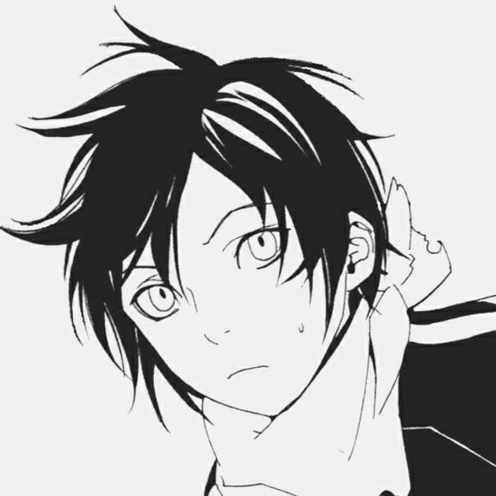
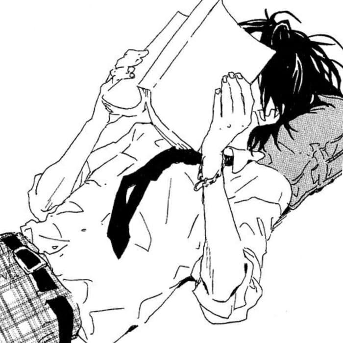
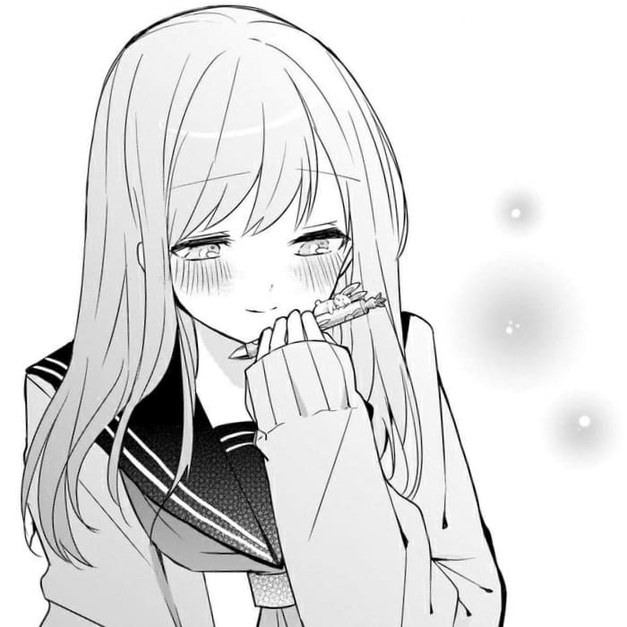
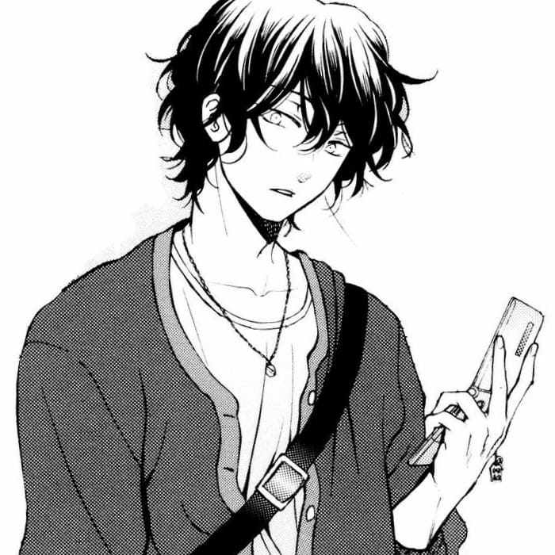

〇〇中学校コンピュータ部
昆部革命
〜ワンランク上の昆部を目指して〜
ABOUT THIS PAGE
このサイトは、〇〇中学校コンピュータ部の紹介サイトです。製作したゲームなどの情報や、活動内容などをお届けします。
ACTIVITY
10月の文化祭と毎月の月例報告会に向けてゲームを作ったり、powerpointなどを使用してスライドを作ったりしています。また、それ以外にも簡単な音楽製作やExcel関数の利用など、様々な活動をしています。
TOPIC
1.シューティングゲーム
十字キーで緑のキャラクターを操作し、赤い敵を全滅させるゲームです。スコア制で、タイマーかHPがなくなったらゲームオーバーです。
2.AI猫
猫がプログラミングされたロボットのようにしゃべります。試作段階ですが、プログラムによってはsiriのように喋らせることも可能です。
3.ファイティングゲーム
二人で遊べる対戦ゲームです。プレイヤー1はwasdキーで移動、プレイヤー2はijklキーで移動など、一台のパソコンでプレイが可能です。殴ったり、蹴ったり、アイテムで攻撃したり、攻撃方法は多々あり、防御などもあります。
プレイはこちらから↓
シューティングゲーム
Members
部長

ATA
よろしくお願いします
副部長

第一村人
一生寝ていたい
副部長

けんちゃん
すっぺらぴっちょん!
すっぺらぴっちょん!
scratch制作担当

トクメイガカリ
バトルゲームだるい
ページ制作者
みょ
(☝︎ ՞ਊ ՞)☝︎
※このホームページは引退記念作です。
画像提供元(https://thypix.com/ja/)